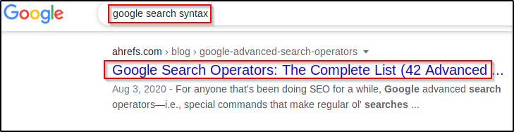

Google Fu.
Google should most definetly be your first resort for any problems you encounter and even gathering information. It is so important to be good at googling, not grat but good is quite fine. One of the things that makes a really good IT person, is the ability to google.
open up your browser and in the search bar, type in "Google search syntax"

This page gives a list of things that you can run on Google. I highly recommend you going through this site, reading and practicing the syntax, Use it in your everyay search, that way, it'll become second nature to you.
Google should be your best friend.
Make sure you search Google first before you go asking anyone anything, and use the right search syntax. You'd be amazed the things you could find while gathering information, using Goole and the right search sybtax. I'm not saying Google will always have all the information on your clients or targets you require, but it's a great place to start.